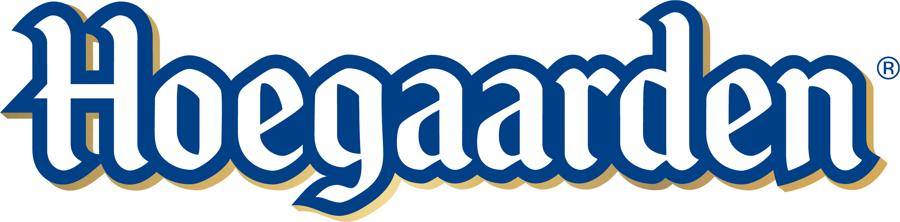

Beer Info
The Original Belgian Wheat Beer. Almost 600 years ago in the Belgian village of Hoegaarden,
a band of monks experimented by adding oddball botanicals from halfway around the world
to their traditional wheat beer. Our recipe, inspired by their creation, is a beer with a refreshing
flavor and captivating aroma, unlike any in the world. Let the refreshing citrus and earthy
coriander alleviate the stresses of modern living and whisk you to another place entirely.
You might call it divine inspiration... we call it Hoegaarden.
Type of beer
Witbier
ABV
4.9%
Glass
Tumbler